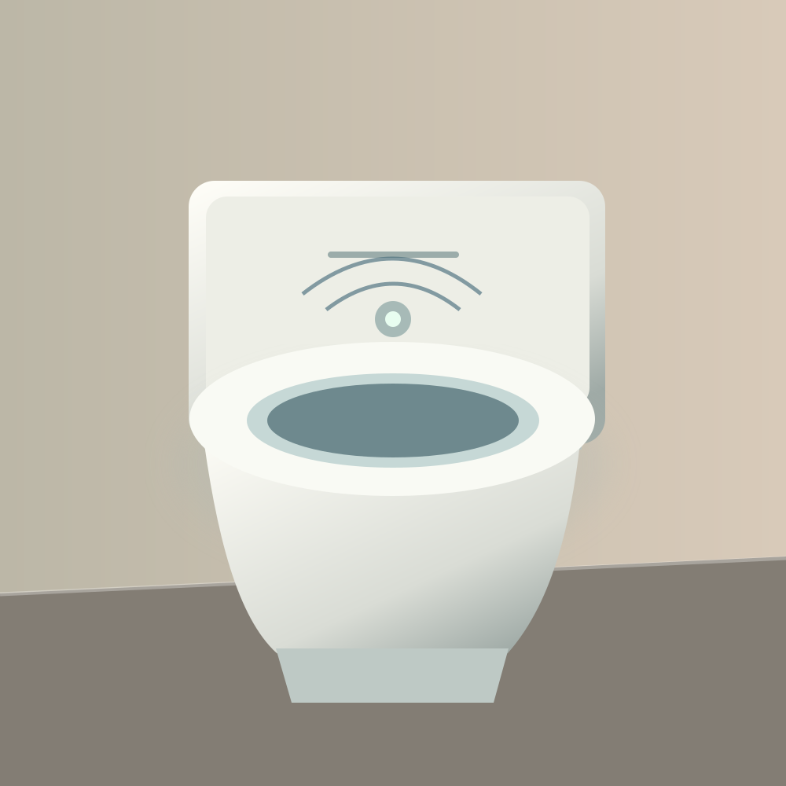
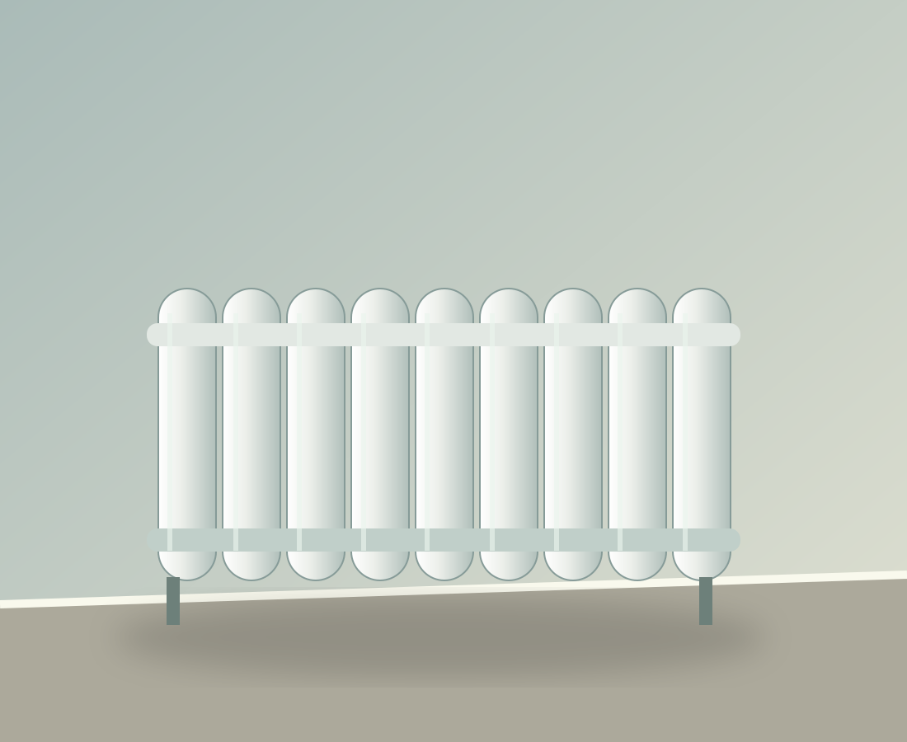
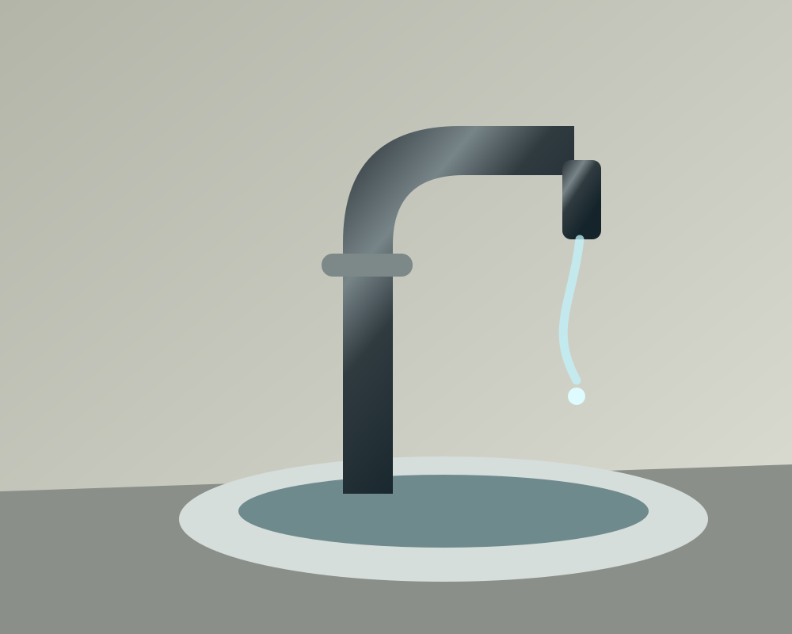
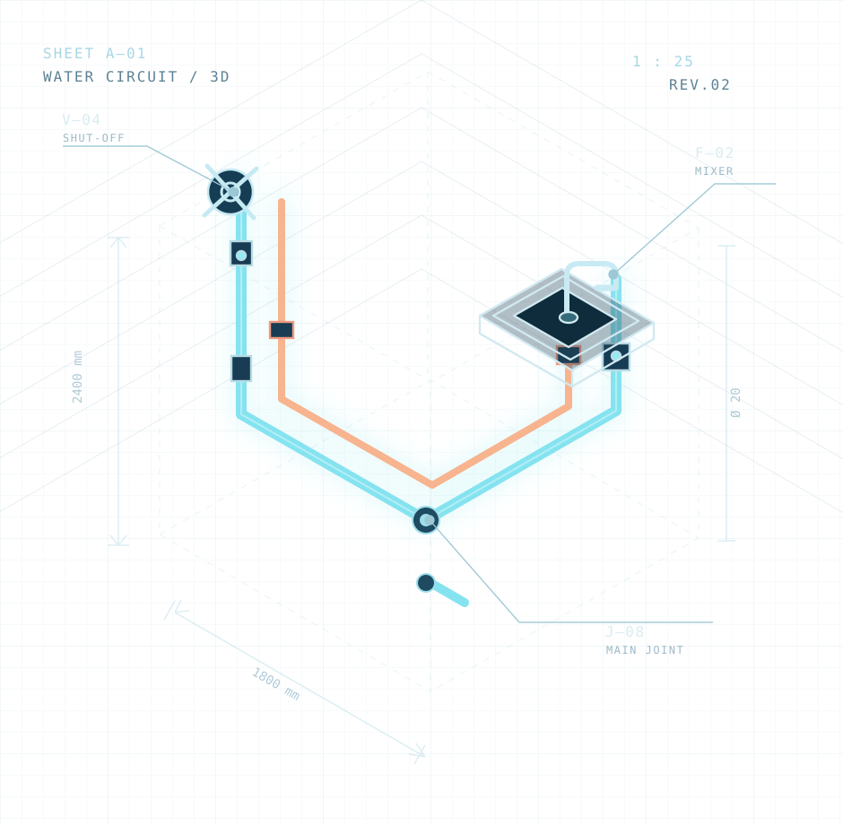

ДУШ.ПОWI-FI.
Вода есть. Труб нет. Бесконтактная доставка душа по беспроводной сети. Наконец-то можно не прокладывать коммуникации. Достаточно верить в сигнал.

КОМФОРТ, КОТОРЫЙ
ПЕРЕШЁЛ ГРАНЬ.
Шесть технологических прорывов, которые ни один сантехник не просил. От душа по сети до радиаторов, зависимых от вашей популярности.
ДУШ
ПО WI-FI
Первый душ, для которого достаточно запомнить пароль от роутера. Шампунь передаётся отдельно.
ПРОВЕРИТЬ СИГНАЛ ↗
УНИТАЗ
С FACE ID
Знает вас в лицо. Даже без макияжа.

ОТОПЛЕНИЕ
ОТ ЛАЙКОВ
Тепло вашей популярности — буквально.

КРАН
С ИИ
Сначала уточнит промпт. Потом подумает.
ТЁПЛЫЙ
ПОЛ PRO
Первые семь дней — почти тепло.
БАТАРЕЯ
BLUETOOTH
Не греет, пока не спарится.
ИНЖЕНЕРИЯ
НА ГРАНИ ФАНТАСТИКИ.
Мы взяли эстетику серьёзных технических чертежей и направили её на решение проблем, которых пока не существует.

M 1:∞ / ГИДРАВЛИКА ОТМЕНЕНАФИЗИКА
НЕ В КУРСЕ.
ДИЗАЙН — ДА.
Потрясающая инженерная документация к технологии, которой нет. Зато у нас есть спецификации, чертежи, и почти убедительный рекламный текст.
- 01 /Находим обычную бытовую проблему
- 02 /Добавляем непрошенный Wi-Fi
- 03 /Презентуем как прорыв года
- 04 /Подписываем: «Это шутка»
ВЫГЛЯДИТ
УБЕДИТЕЛЬНО.
Фотографии интерьеров и технические метки. Если бы невозможная сантехника существовала, она выглядела бы именно так.


ТРУБЫ —
ЭТО ПРОШЛЫЙ
ВЕК.
Мы не делаем невозможное возможным. Мы делаем невозможное настолько красиво, что на секунду хочется заказать.
НАША ФИЛОСОФИЯ ↗СОВЕТОМ
АБСУРДА
ГОТОВЫ
НАМОКНУТЬ?
Выберите несуществующую технологию и получите вполне реальную дозу хорошего настроения.